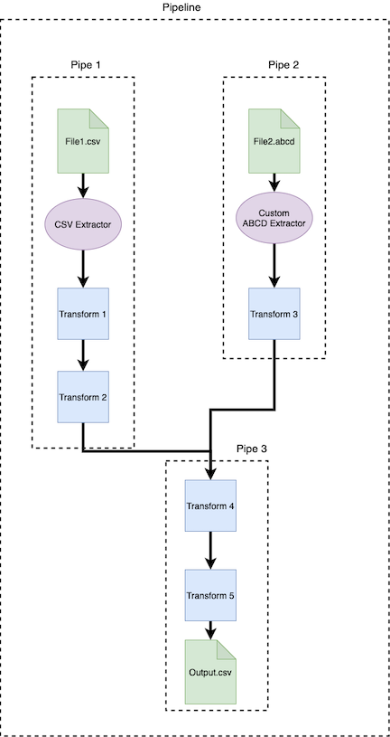

3. Pipes and Pipelines¶
Pipes are made up of operators which linearly transform data. Pipelines are made up of Pipes which can converge and diverge. They represent entire data pipelines. All operators must be wrapped in a Pipe.
Piperoni Pipelining Diagram:
3.1. Pipes¶
Pipes can begin with an Extractor, and can contain one or more Transformers. `Pipes` should represent the transformation of a single file or object. All operators must be wrapped in a Pipe. In order to handle multiple files and/or objects, multiple Pipes should be combined into a Pipeline.
Below is an example of a Pipe constructed of a CSVExtractor, and three custom transformers:
from piperoni.operators.extract.extract_file.csv_ import CSVExtractor
from my_project.operators import Transformer1, Transformer2, Transformer3
from piperoni.operators.pipe import Pipe
import pandas as pd
my_pipe = Pipe(
[
CSVExtractor(),
Transformer1(),
Transformer2(),
Transformer3()
],
name='My pipe'
)
final_object = my_pipe("path/to/input.csv")
3.2. Pipelines¶
Pipelines are an optional encapsulation around multiple Pipes and are required for branching functionality. They represent entire data pipelines of multiple inputs and/or outputs. The Pipeline object provides functionality to pass outputs of Pipes as inputs to other Pipes, provide caching of outputs in case of multiple dependence, and providing branching through CastOperators.
Transforms that connect to a pipeline can either pass a regular data type, or a PipelineData type. PipelineData is very similar to a dict and can be used as such. Note that if a transform is splitting its output, it should return a PipelineData object. Also note that a transform being fed multiple inputs by the Pipeline should expect a PipelineData object as its input type.
Pipeline objects need to be defined using three dicts:
`inputs_dict`, A dict where keys are Pipes and values are strings or a list of strings of unique labels.`outputs_dict`, A dict where keys are Pipes and values are strings or a list of strings of unique labels.`raw_inputs`, A dict where keys are Pipes and values are inputs to those Pipes.
You can also visualize your Pipeline with the `visualize` method. `visualize` has one optional argument, `full` (`False` by default).
If `full == False`, your visulization will collapse each `Pipe`, making a more compact visulization.
If `full == True`, each operator within each `Pipe` will be displayed on the output visulization.
class PrintOperator(PassthroughOperator):
def transform(self, input_):
print(input_)
return input_
class IncrementOperator(TransformOperator):
def transform(self, input_):
print(f"Received {input_}, passing {input_+1}.")
return input_ + 1
class SumOperator(CastOperator):
@property
def input_type(self):
return PipelineData
@property
def output_type(self):
return int
def transform(self, input_):
to_sum = list(input_.values())
print(f"Summing {to_sum}, returning {sum(to_sum)}.")
return sum(to_sum)
class OneVsRestSplitOperator(CastOperator):
def __init__(self, name):
self.name = name
@property
def input_type(self):
return int
@property
def output_type(self):
return PipelineData
def transform(self, input_):
print(f"Received {input_}, splitting into {1} and {input_-1}.")
return {f"{self.name}_output1": 1, f"{self.name}_output2": input_ - 1}
pipe1 = Pipe(
[IncrementOperator(), IncrementOperator(), IncrementOperator()], name="Pipe1")
pipe2 = Pipe(
[SumOperator(), IncrementOperator(), OneVsRestSplitOperator("pipe2"),], name="Pipe2",)
pipe3 = Pipe(
[SumOperator(), OneVsRestSplitOperator("pipe3")], name="Pipe3")
# ----------------------------------------
inputs = {
pipe1: "pipe1_raw",
pipe2: ["pipe1_output", "pipe2_raw"],
pipe3: ["pipe1_output", "pipe2_output1", "pipe3_raw"],
}
outputs = {
pipe1: "pipe1_output",
pipe2: ["pipe2_output1", "pipe2_output2"],
pipe3: ["pipe3_output1", "pipe3_output2"],
}
raws = {"pipe1_raw": 3, "pipe2_raw": 7, "pipe3_raw": 13}
pipeline = Pipeline(inputs, outputs, raws)
pipeline.visualize()
outputs = pipeline.run()